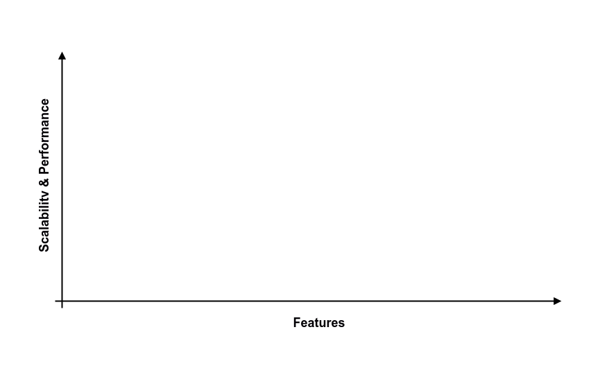
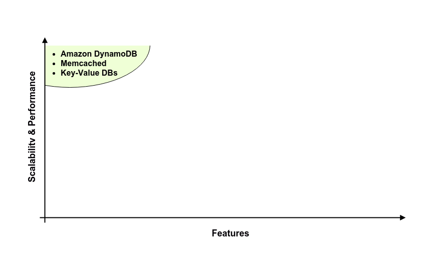
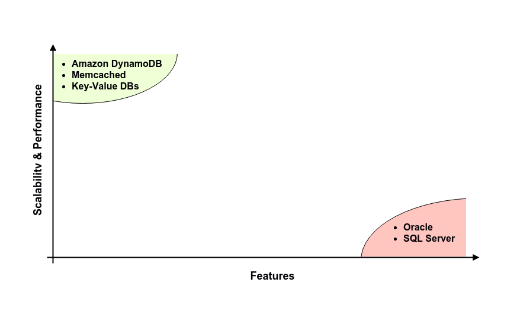
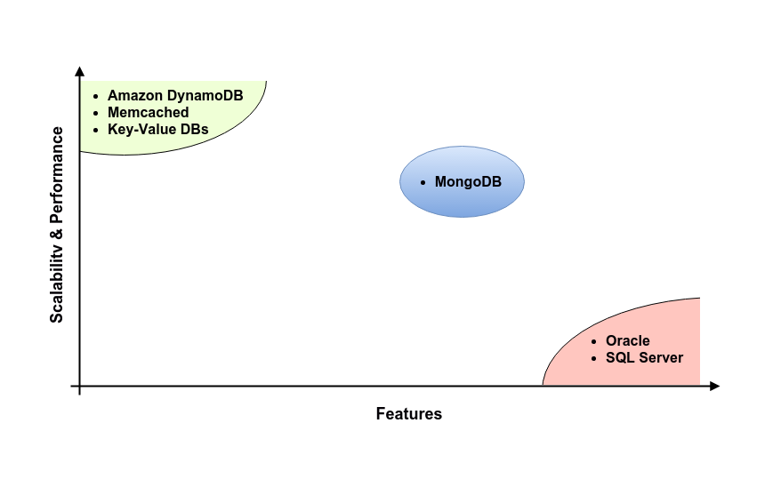
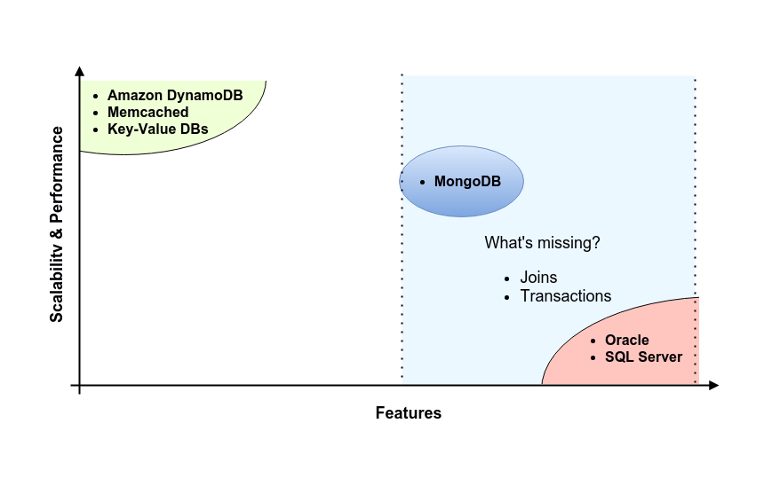

MongoDB - Introduction
Introduction
Agenda ~40 mins
- Introduction (~5 mins)
- What is MongoDB (~15 mins)
- How does it represent and store data?
- How does it differ to RDBMS (Oracle, SQL Server)?
- Advantages and Disadvantages
- Basic CRUD Operations (~15 mins)
- Create
- Read
- Update
- Delete
- Close (~5 mins)
A brief history
- A company called 10gen started developing MongoDB in 2007
- Its initial release was 2009
- MongoDB is the fourth most popular DMS
- Oracle (Oracle - 1980)
- MySQL (Oracle - 1995)
- SQL Server (Microsoft - 1989)
- It is the most popular for document stores
What is MongoDB?
- Non-Relational database for JSON Documents (paper)
- Documents are held within Collections (drawer)
- Collections are held within Databases (cabinet)

Documents
- Documents are represented using Key-Value pairs in JavaScript Object Notation JSON
- The documents can contain hierarchy, something which is not easily achieved in a RDBMS
- The documents are physically stored in Binary JSON BSON format.
{"age":25}
{
"age":25,
"address": {
"addLine1":"33 High Street",
"addLine2":"Telford",
...
}
}
MongoDB is Schema-less
- Enables flexible data models
- This is great for iterative development
- Document A can exist in Collection X with the following attribute:
- Document B can also exist in Collection X with the following additional attribute:
{"age":25}
{"age":25,"favouriteColour":"red"}
How is this different to a RDBMS?
- RDBMS have a Schema Definition that defines entities and their attributes
- In a RDBMS it's not possible to have records with different attributes within the same entity
- If an enhancement was required to add a new attribute then the entity would need to be re-modelled/engineered
How MongoDB compares to other DMS
How MongoDB compares to other DMS
How MongoDB compares to other DMS
How MongoDB compares to other DMS
How MongoDB compares to other DMS
Advantages and Disadvantages
| RDBMS | MongoDB | |
|---|---|---|
| Advantages |
|
|
| Disadvantages |
|
|
Basic CRUD Operations
| Operation | MongoDB Method | SQL Command |
|---|---|---|
| Create | insert() | INSERT |
| Read | find() | SELECT |
| Update | update() | UPDATE |
| Delete | remove() | DELETE |
- Important thing to note is that operations exist as methods in programming language APIs. Not as a separate query language.
insert(document)
- Using the mongo shell. Switch to the "blog" database:
- Insert a entry to the post collection:
- Result indicates 1 document inserted:
> use blog
switched to db blog> db.post.insert({
"title":"Our First Post",
"content":"This is our first post"
});WriteResult({ "nInserted" : 1 })find(query, projection)
- Using the mongo shell. Switch to the "blog" database:
- Find entries in the post collection:
- Results:
- You chain the .pretty() method to output more friendly JSON:
> use blog
switched to db blog> db.post.find();{ "_id" : ObjectId("56d7015f26876405553d6e10"), "title" : "Our First Post", "content" : "This is our first post" }> db.post.find().pretty();
{
"_id" : ObjectId("56d7015f26876405553d6e10"),
"title" : "Our First Post",
"content" : "This is our first post"
}update(query, update, options)
- Using the mongo shell. Switch to the "blog" database:
- Update the first post title to be Hello World:
- Results:
- Confirm Results:
> use blog
switched to db blog> db.post.update(
{"title":"Our First Post"}, // query document parameter
{
$set: { //
"title":"Hello World" // update document parameter
} //
}
);WriteResult({ "nMatched" : 1, "nUpserted" : 0, "nModified" : 1 })> db.post.find()
{ "_id" : ObjectId("56d7015f26876405553d6e10"), "title" : "Hello World", "content" : "This is our first post" }remove(query, options)
- Using the mongo shell. Switch to the "blog" database:
- Delete the Hello World post:
- Results:
- Confirm removal:
> use blog
switched to db blog> db.post.remove(
{"title":"Hello World"} // query document parameter
);WriteResult({ "nRemoved" : 1 })> db.post.find()
>